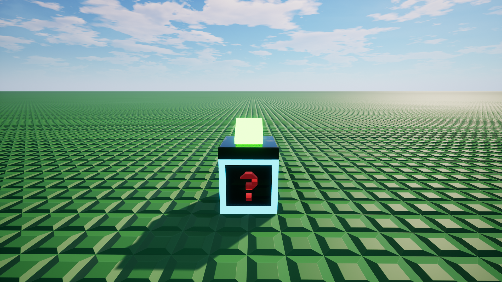
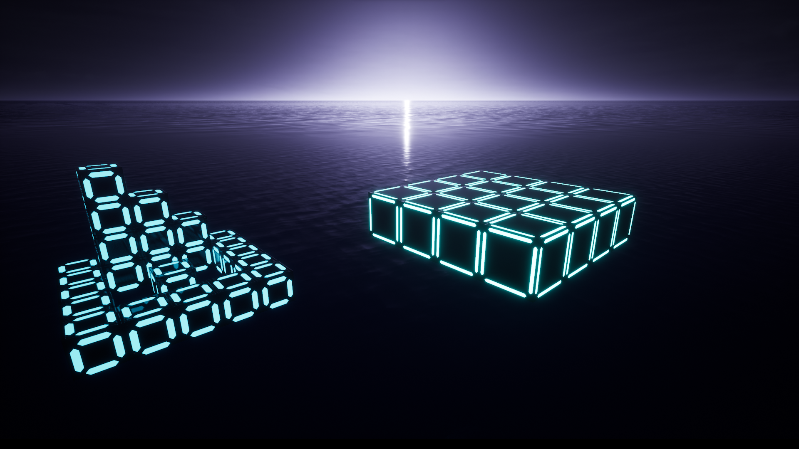
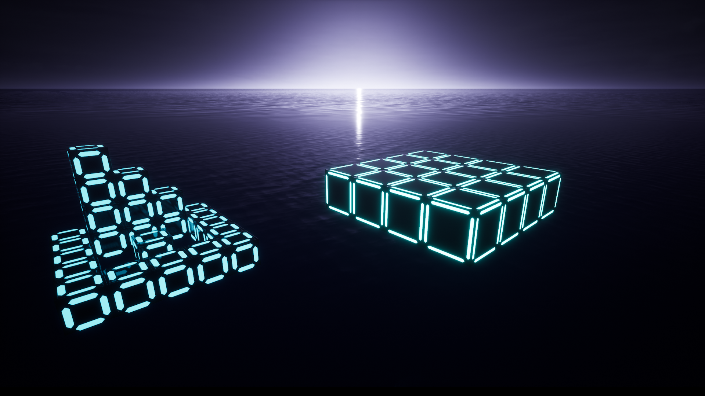
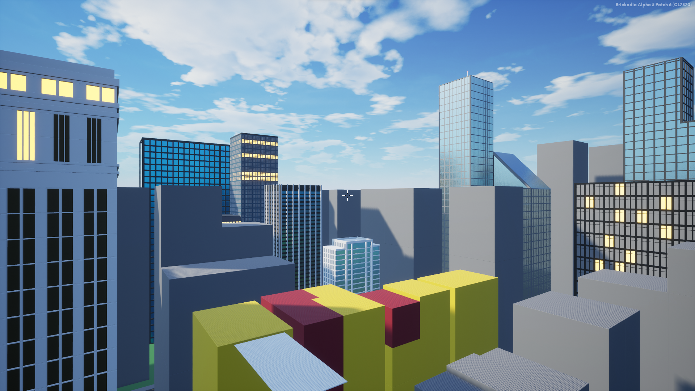
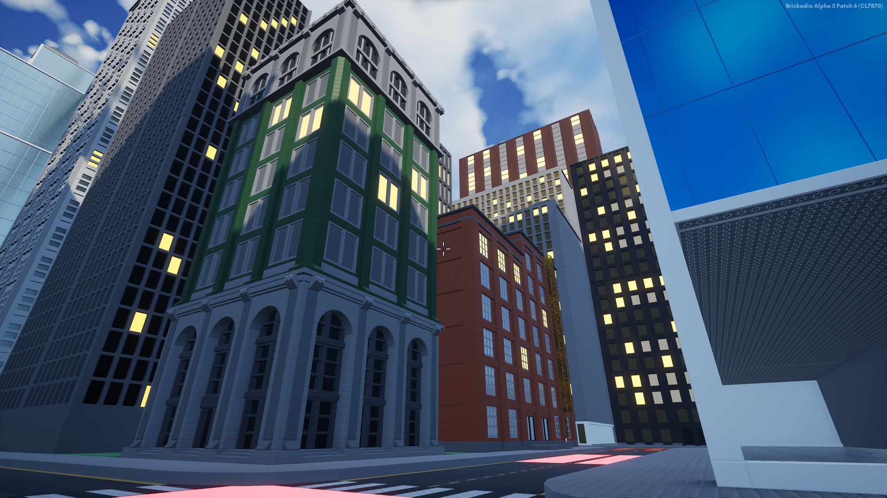
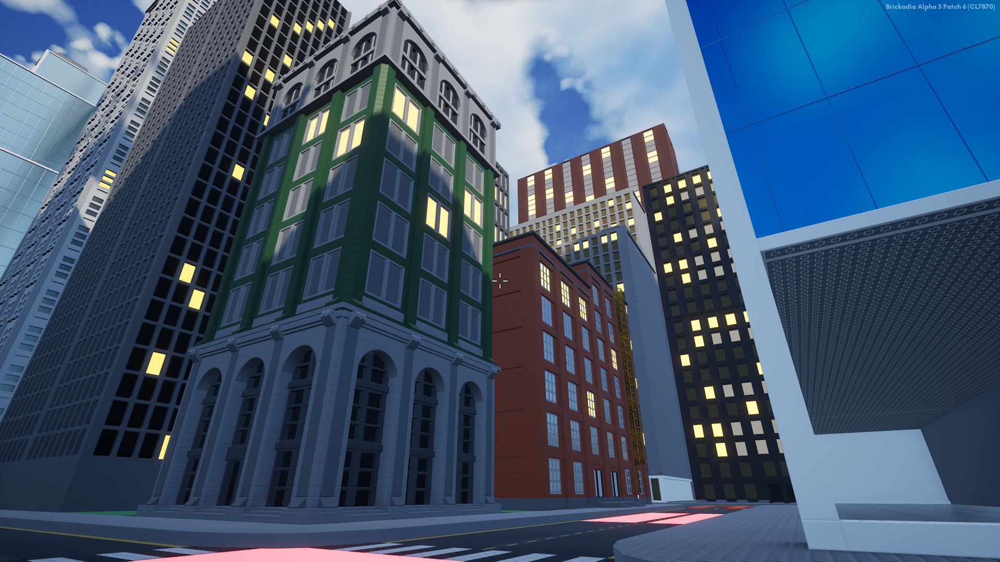

DevBlog #3- Creating the first Deathrun maps in Brickadia
What should Brickadia Deathrun maps be like? And Developing Neon Highlights and Soviergn heights.


What is this? A blog that's actually about a Deathrun? Only took us 3 tries! Despite the photo above, I'm not dead! Welcome to our third blog post! Today, I'm excited to showcase the first-ever Deathrun maps for our server.
Introduction
Following our last blog post focusing on Deathrun's broader aspects, it's time to shift our focus to the maps.
With Early Access on the horizon, we're getting ready to introduce three Deathrun maps. Each map focuses new features like physics, vehicles, and behaviors. But before we move forward with map creation, there are a few things we need to take care of.
Map Requirements
I didn't want to have a bunch of non-epic maps so I put together a list of basic requirements we must all follow. This includes any Community maps that we might use in the future; So if anyone asks for a list of map requirements direct them to this Blog post
- Maps must have a theme, and be unique from all other maps. Try to stay away from generic themes (like snowy, or Tropical Islands), adding story elements can help with map creativity, without them you might find yourself running out of trap ideas.
- Each map must have at least 1 unique feature. (think Cars from Sovereign Heights, or the changing traps in Jungle Escape)
- All Traps must fit, and make sense with the map's overall theme.
- Must be detailed; Minimalistic maps are ok, but nothing low effort.
- Segment your map. Switch it up so it's not one long stretch of the same thing.
- It must take between 55 (small) - and 100 (large) seconds for the runners to reach the end of the course
- Minimum of 11 traps Maximum of 18.
- First few traps should be designed to take out multiple people at once, while traps should target specific runners towards the end of the course.
- Must support a minimum of 15 Runners. (Avoid narrow pathways and extremely tight spaces)
- Generally avoid using teleporters for Runners path unless needed.
- Reserve spaces for checkpoints
- Deaths Pathway must be shorter than the Runner; And should not cross the Runners path
- Death must have a clear view of the runners; Avoid putting a runner's path directly below the Deaths area.
- Death must always have access to their whole path.
- Traps need to be non-repetitive; (nothing twice in a row!) try to make a few unique ones that fit with the map's play style!
- For large spaces between traps add fun features, like obstacles, or stunning visuals. Keep the players engaged at all times!
- Traps & pathways must be obvious; No fake pathways, or anything that might confuse the players.
- No profanity, or anything inappropriate.
- Map Environment must look decent with the lobby, and work with the default water level of 101
- Keep the Brick Count generally below 515k bricks
If you have been following Deathrun In other games you might recognize a few of these requirements. I did take a few directly from other games. If they work there, they will work here as well.
Trap Types
Through figuring out the Guidelines, I also decided to generalize the Different trap types based on how to proceed. It should help with trap diversity.
- Hazard traps - (Spatial Awareness, Adaptation)
- Team traps - (Teamwork, Communication, Coordination)
- Mental traps - (Timing, Puzzles, Problem-solving)
- Skill traps - (Parkour, Dodging, Blocking, Sprinting, Sneaking)
- Sacrificial traps - (Sacrifice)
- Chance traps - (Luck)
- Traps can have split categories.
- Traps can transform types after activated (e.g., Skill turns into Hazard after pressed).
Map Development: Lets do this.
- Assets: Before we chose the first map themes I needed to build a few basic things, Like checkpoints, and the trap buttons.
Checkpoint, Teleport, and Directional teleport pads
Trap buttons
These will be consistent across each map.
Map 1: "Neon Highlights"
Neon-highlighted obstacle course with platforms, and various shapes.
At the time of development, EA was planned to be released in April 2023. Meaning we didn't have a lot of time. So we thought of "Beauty in simplicity" and eventually decided to do shapes, platforms, and various colors. This gave us a wide range of creative freedom, and it was something we could put together quickly without looking like complete garbage.
Map design: Everything needs to be a basic shape and needs to be outlined with one of the neon colors.
Trap design: Since we wanted each map to focus on 1 new feature of EA, we decided to make this one based on physics. So a lot of the traps are physics-based. I'm not going to give away the traps here, that would be too much of a spoiler.
I started with a few basic platforms, and cubes.
 

Then I made a path and chose some neon colors
The pathway was complete, But it wasn't perfect. There wasn't enough color variation. Too much blue!
I changed it up, added more color & included the color orange. It looks much better.
The last thing I did was the EOR (End Of Round) Arena

With the map building complete, It was time to wait for EA to release. I had a lot of ideas for this map that ended up not getting implemented So I may do a part 2 of this map in the future. You'll have to wait and see.
Map 2: "Sovereign heights"
a Pursuit through city rooftops, streets, and sewers.
I wanted to focus on the EA feature of Vehicles for the second map. So what better than a city-based map? Now, a city-based map alone wouldn't go far, so I introduced the concept of an active pursuit, which adds a narrative element to the design of the traps.
Map design: Basically, a chunk of a city. Tall buildings, streets, stores, cars, etc...
I started with making some custom roads

Then I detailed the shapes into real buildings.
The farther away the buildings were from the playable part of the map, the less quality they had, but If you look closely at them you can probably see which ones I started with, and which I finished with... This was a monumental task, and it took way longer than I wanted it to (49 days!)

 

If you are wondering, there are 108 different buildings
Deaths Pathway: I wanted a way so players could know where to look for Death, and keep it in a city building style, so each of Death's buildings match each other
I added cranes, and other details, like roof access doors and AC units.
Sewers: The streets are filled with moving cars blocking the road, so players need a way to get around them. So I planned for them to go underneath, and into the sewers. It's a very large sewer, so it's not accurate but I think it fits nicely.
And that's all for this map currently! cars, helicopters, planes, and other moving objects would have to wait until after EA.

What about map #3?
I know at the beginning of this blog I started to get ready for us to introduce three Deathrun maps, but the 3rd one taking way longer than I expected. It's the most detailed map we have planned, and I am experimenting with a few new features, But don't worry we are making steady progress! It just doesn't look that presentable yet.
Looking Ahead
That is all I have for you today! Thanks for reading!
OH and the third Deathrun map is called "Jungle Escape" :)